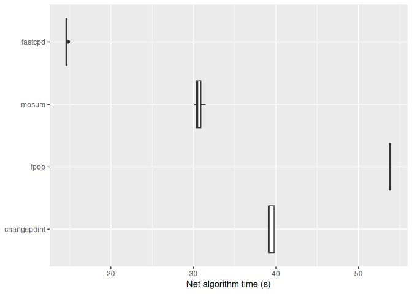

Documentation: fastcpd.xingchi.li
R
# install.packages("pak")
pak::pak("doccstat/fastcpd")
# or install from CRAN
install.packages("fastcpd")Comparison
set.seed(1)
n <- 10^8
mean_data <- c(rnorm(n / 2, 0, 1), rnorm(n / 2, 50, 1))
print(run_isolated(fastcpd::fastcpd.mean(mean_data, r.progress = FALSE, cp_only = TRUE, variance_estimation = 1)))
#> user system elapsed
#> 8.512 6.297 14.478
print(run_isolated(mosum::mosum(c(mean_data), G = 40)))
#> user system elapsed
#> 9.022 6.679 15.711
print(run_isolated(fpop::Fpop(mean_data, 2 * log(n))))
#> user system elapsed
#> 44.988 2.719 47.734
print(run_isolated(changepoint::cpt.mean(mean_data, method = "PELT")))
#> user system elapsed
#> 31.410 6.476 37.911
FAQ
Should I install suggested packages?
The suggested packages are not required for the main functionality of the package. They are only required for the vignettes. If you want to learn more about the package comparison and other vignettes, you could either check out vignettes on CRAN or pkgdown generated documentation.
I countered problems related to gfortran on Mac OSX or Linux!
The package should be able to install on Mac and any Linux distribution without any problems if all the dependencies are installed. However, if you encountered problems related to gfortran, it might be because RcppArmadillo is not installed previously. Try Mac OSX stackoverflow solution or Linux stackover solution if you have trouble installing RcppArmadillo.
We welcome contributions from everyone. Please follow the instructions below to make contributions.
Fork the repo.
Create a new branch from
mainbranch.-
Make changes and commit them.
- Please follow the Google’s R style guide for naming variables and functions.
- If you are adding a new family of models with new cost functions with corresponding gradient and Hessian, please add them to
src/fastcpd_class_cost.ccwith proper example and tests invignettes/gallery.Rmdandtests/testthat/test-gallery.R. - Add the family name to
src/fastcpd_constants.h. - [Recommended] Add a new wrapper function in
R/fastcpd_wrappers.Rfor the new family of models and move the examples to the new wrapper function as roxygen examples. - Add the new wrapper function to the corresponding section in
_pkgdown.yml.
Push the changes to your fork.
Create a pull request.
Make sure the pull request does not create new warnings or errors in
devtools::check().
Trouble installing Python package.
Python headers are required to install the Python package. If you are using Ubuntu, you can install the headers with:
sudo apt install python3-devEncountered a bug or unintended behavior?
- File a ticket at GitHub Issues.
- Contact the authors specified in DESCRIPTION.